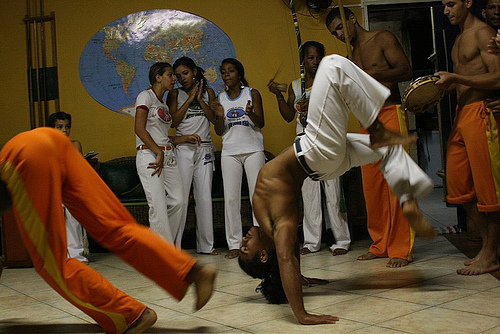
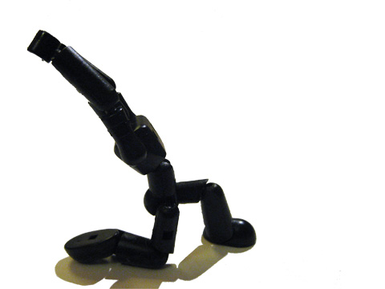
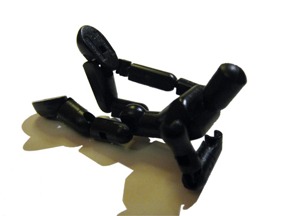
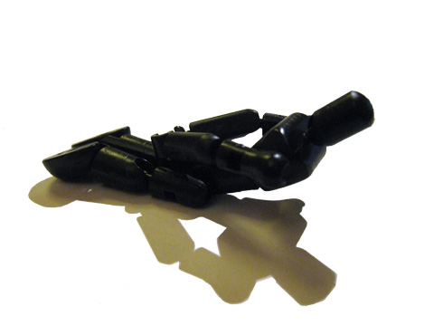

Йога и капоэйра — Подготовка к прогибам

Прогибы являются одними из самых впечатляющих и, одновременно, пугающих элементов как в йоге, так и в капоэйре. Они имеют важное значение при выполнении разнообразных уклонов и уходов (особенно если вы играете анголу) и необходимы при выполнении практически всех акробатических элементов. Тем не менее, многие капоэйристы либо опасаются прогибов, потому что они сложные и травмоопасные, либо думают, что не смогут их выполнить. В этой статье будут приведены несколько подводящих упражнений из йоги, которые подготовят ваше тело для выполнения сумасшедших прогибов и мостиков. =)
Crescent Lunge (Анджанасана):

Большинство капоэйристов имеют крепкие и постоянно забитые квадрицепсы и сгибатели бедра из-за постоянной джинги. Поза Crescent Lunge откроет и растянет сгибатели бедра и пах, а также научит вас гнуть верхнюю часть позвоночника. Это отличная поза, чтобы разогреть тело перед тренировкой или игрой в роде.
Техника выполнения:
- Встаньте на колени и сделайте выпад правой ногой. Старайтесь, чтобы правое бедро было параллельно полу.
- Вытягиваете переднюю поверхность левой ноги назад, стараейтесь растянуть ее от таза до колена, от колена до лодыжки и вдоль подъема до кончиков пальцев. Если поставить ладони на колено правой ноги и углубить выпад, сильнее согнув правое колено, то вам удастся почувствовать хорошее вытяжение передней поверхности левого бедра.
- Поднимаете руки над головой, вытягиваетесь до кончиков пальцев и поднимаете грудную клетку. Прогиб должен быть настолько сильным, чтобы вам было комфортно, чтобы ваш копчик был направлен к полу, а передняя поверхность левого бедра еще более вытянулась.
- Опускаете таз еще ниже — прогибаетесь максимально назад. Низ спины должен прогнуться чуть больше (из-за строения тела). Сознательно поднимаете прогиб до середины спины, вытягивая руки над головой и направляя грудную клетку вперед и вверх.
- Ладони сжимайте вместе, направив их друг к другу. Следите за тем, чтобы не возникало напряжения в шее и плечах.
- Поднимаете голову и обращаете взгляд на руки. Остаетесь в данной позе в течение нескольких вдохов-выдохов.
- На выдохе опускаете руки на пол и встаёте на четвереньки.
- Повторите движение на другую сторону.
Half Frog (Ардха Бхекасана):

Эта поза прорабатывает квадрицепсы ещё более глубоко. Отлично подходит для выполнения после каждой тренировки, чтобы предотвратить забитость мышц бедра.
Техника выполнения:
- Ложитесь на живот. Поднимите голову и верхнюю часть корпуса вверх.
- Согните правое колено и переместите пятку его по направлению к ягодице, затем, поддерживая себя с помощью левого предплечья, коснитесь правой рукой спины и захватите ступню с внутренней стороны. Разверните согнутую руку так, чтобы ладонь касалась верхней части стопы, а пальцы рук были направлены к голове. Продвиньте ладонь ниже и направьте пальцы ноги и пятку к полу. Когда колени и лодыжки станут более подвижными, Вы сможете коснуться пятками пола.
- Поднимайте грудную клетку вверх.
- Задержитесь в позе 15-30 секунд. Не задерживайте дыхание.
- С выдохом отпустите стопу, выпрямите ноги, опустите руки и корпус и расслабьтесь.
- Проделайте тоже самое с другой ногой.
- По мере того, как бедра будут становится более гибкими, Вы можете попробовать выполнить позу на обе ноги одновременно.
Small Cobra Variations (вариации Ардха Бхуджангасана)

При прогибах назад активно работают мышцы спины и ног, которые помогают удерживать баланс. Поэтому важно научиться использовать свои ноги, чтобы поддерживать более глубокий и безопасный мостик. Эта поза как раз то что нужно.
Техника выполнения:
- Ложитесь на живот и упритесь локтями в пол. Сведите предплечья, расположите их вертикально, положите подбородок на ладони.
- В этой позе расслабьтесь, немного отдохните, затем опустите кисти рук и положите их на коврик ладонями вниз таким образом, чтобы руки от локтей до кончиков пальцев лежали на полу и были параллельны друг другу.
- Опустите плечи вниз, оставляя приподнятой верхнюю часть корпуса. Запрокиньте голову вверх и назад, не допуская при этом заметного напряжения.
- Ощутите напряжение средней и верхней части спины. Расслабьте ноги. Не разводите их в стороны.
- Оставайтесь в этой позе 60 секунд или дольше.
- Одной из вариаций является удержание верхней части корпуса на весу без упора на руки силой спины и ног.
Используйте эти три позы и их вариации после каждой тренировки, и вы увидите быстрый прогресс в плане прогибов, а нижняя часть спины будет вам благодарна и вы сыграете ещё много красивых игр в роде. =))
По материалам rodamagazine